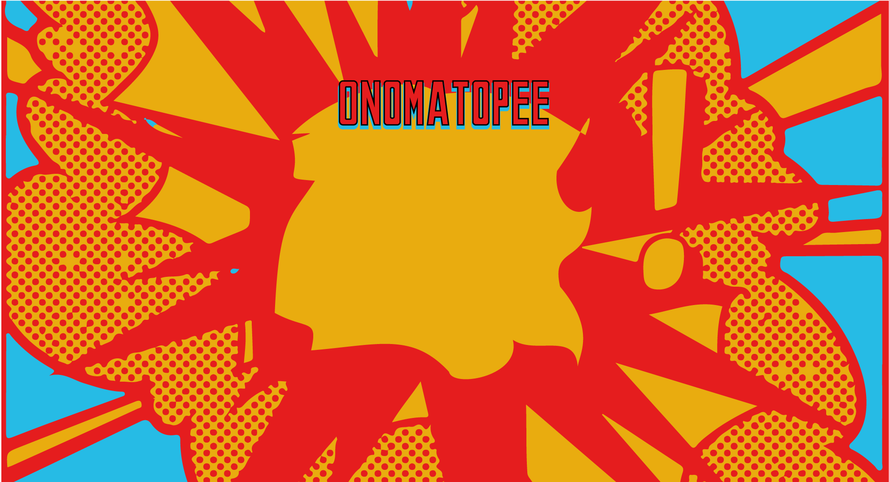
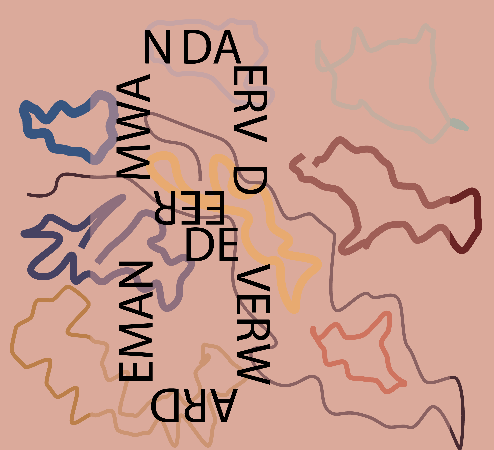

12-7-11 by Malkovich
Oenomotapee
- ‘Biertje dan maar?’ – ‘Graag.’ – ‘Vermoeiende dag?’ – ‘Nah. Naar de bilbiotheek geweest. Met de bus.’ – ‘Gaat daar een bus naartoe?’ – ‘De bus stopt op het stationsplein.’ – ‘Ah. En vandaar moet je lopen?’ – ‘Ja, ik was met mijn zoon. Die sliep in zijn kinderwagen.’ – ‘Goed zo. Lekker wandelweer?’ […]
12-7-11 by Malkovich
Blind
Kraak de code en win een romantisch etentje met de verwarde man. In kwellende situaties toveren apen pennenvruchten uit invloedrijke tapijthandelaren. De engelen buigen uitermate succesvol en negeren langzaam onze overrijpe politieke overlevingstrategieën. Verveelde en radicaal hompiekurkende ettertjes tegelen slablaadjes tot appelmoes. Tevens, in overleg, nagelen schoolverlaters patatjes. Leipe eekhoorntjes in Napels, met immorele jaknikkers […]
12-7-11 by Malkovich
Nico Dijkshoorn
Noot vooraf: de heer Nico Dijkshoorn hecht eraan te melden dat hij onderstaande niet heeft geschreven. Ik stap uit een, ja wat is het eigenlijk?, een bus. Lijn 21? Zou zomaar kunnen. Twaalf uur. In de middag. Mijn zoon, luistert u mee?, mijn grandioze zoon, diezelfde zoon die zojuist nog die knotsgekke bus bij elkaar […]

12-7-11 by Malkovich
Verrassing
- ‘Biertje dan maar?’ – ‘Graag.’ – ‘Vermoeiende dag?’ – ‘Nah. Naar de bilbiotheek geweest. Met de bus.’ – ‘Gaat daar een bus naartoe?’ – ‘De bus stopt op het stationsplein.’ – ‘Ah. En vandaar moet je lopen?’ – ‘Ja, ik was met mijn zoon. Die sliep in zijn kinderwagen.’ – ‘Goed zo. Lekker wandelweer?’ […]
12-7-11 by Malkovich
Code
Kraak de code en win een romantisch etentje met de verwarde man. In kwellende situaties toveren apen pennenvruchten uit invloedrijke tapijthandelaren. De engelen buigen uitermate succesvol en negeren langzaam onze overrijpe politieke overlevingstrategieën. Verveelde en radicaal hompiekurkende ettertjes tegelen slablaadjes tot appelmoes. Tevens, in overleg, nagelen schoolverlaters patatjes. Leipe eekhoorntjes in Napels, met immorele jaknikkers […]

12-7-11 by Malkovich
Verwarde Man
Noot vooraf: de heer Nico Dijkshoorn hecht eraan te melden dat hij onderstaande niet heeft geschreven. Ik stap uit een, ja wat is het eigenlijk?, een bus. Lijn 21? Zou zomaar kunnen. Twaalf uur. In de middag. Mijn zoon, luistert u mee?, mijn grandioze zoon, diezelfde zoon die zojuist nog die knotsgekke bus bij elkaar […]